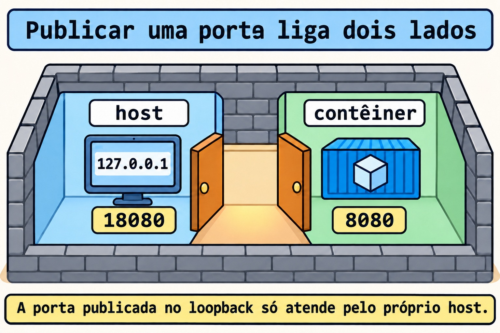
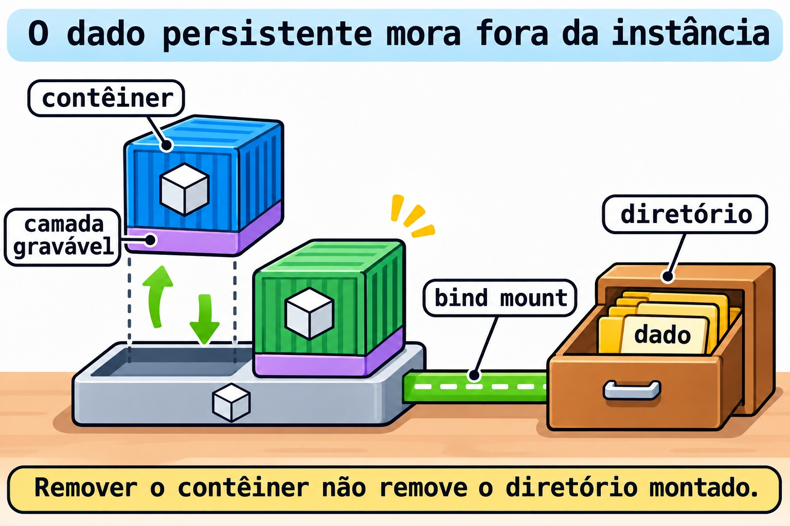
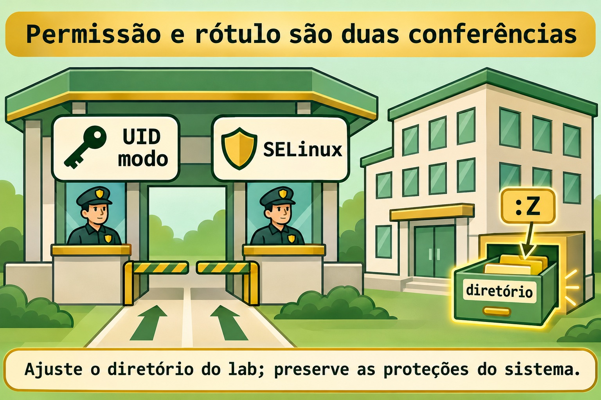

Aula 18.2 · Rodar e persistir
O coração desta aula: acompanhe processo, porta e dado como três provas diferentes.
| Ficha | Plano de trabalho |
|---|---|
| Módulo | M18 · Podman, aula 2 de 5 |
| Quando | Semana 24 |
| Ao final | Executar nginx rootless e demonstrar persistência fora da instância |
| Pré-requisitos | 18.1 concluída no mesmo usuário; curl e console da VM |
| Duração | 80–100 minutos |
| Snapshot | m18a2-inicio e m18a2-fim nas VMs usadas |
Use a VM 201 como bancada principal e repita a comparação na 202. O nome do contêiner é local a cada usuário em cada VM.
Tudo que usa Podman roda como student dentro da VM. A aplicação fica acessível apenas pelo loopback dessa VM, sem publicação na LAN.
1 · Aquecimento
- O pull da aula anterior criou algum processo de nginx?
- Qual referência local permite repetir a execução sem depender da tag atual?
- Por que usar outro usuário pode mostrar uma lista diferente de contêineres?
Antes do lab, preveja onde um arquivo criado dentro do contêiner vai parar depois de remover a instância.
2 · Por que importa
O site funciona e o administrador atualiza a imagem recriando o contêiner. A página personalizada some porque estava na camada gravável da instância removida.
Em outro chamado, o processo está ativo, mas o teste de fora não alcança uma porta publicada apenas no loopback. A falha está na expectativa de alcance.
Você vai provar o conteúdo por HTTP, distinguir reiniciar de recriar e manter as proteções do sistema enquanto diagnostica acesso a arquivos.
Ponte Windows
Separar disco de dados e máquina descartável ajuda a pensar na persistência. Porém um bind mount não é automaticamente uma cópia de segurança.
3 · Modelo mental


| Camada | Prova útil | Limite da conclusão |
|---|---|---|
| Processo | Estado do contêiner | Não prova resposta HTTP |
| Porta | Publicação e endereço de escuta | Não prova conteúdo correto |
| Arquivo | Caminho e hash do dado | Não prova acesso pelo processo |
| Aplicação | Resposta HTTP esperada | Não prova início no boot |
A porta da esquerda pertence ao host da VM; a da direita pertence ao processo no contêiner. O mapeamento não muda a configuração de escuta do nginx.
4 · O essencial
Reiniciar preserva a instância; recriar muda o objeto
Parar e iniciar o mesmo contêiner preserva sua camada gravável. Remover a instância descarta essa camada; um nome igual não traz o estado anterior de volta.
Um bind mount aponta para um caminho do host. O arquivo do site ficará em ~/m18-lab/site, separado da camada gravável.


O mount será somente leitura dentro do contêiner. Você editará a cópia do host com o dono correto, sem dar escrita ao processo web.
Permissões e SELinux
Modo, identidade mapeada e rótulo de segurança são condições diferentes. Corrigir apenas uma delas pode deixar o acesso bloqueado.
O sufixo :Z solicita relabel privado para o contêiner. A opção compartilhada :z atende outro contrato; não as troque sem avaliar os consumidores.
Aplique relabel somente no diretório dedicado do exercício. Não monte nem relabele toda a home ou um diretório de sistema.
Rocky × Debian
| Condição | Rocky 201 | Debian 202 |
|---|---|---|
| Dono | student, rootless | student, rootless |
| Publicação | Apenas loopback | Apenas loopback |
| SELinux | Conferir modo e rótulos reais | Não presumir SELinux ativo |
| Acesso a arquivos | Modo, mapa e rótulo | Modo, mapa e políticas locais |
5 · Lab guiado
Antes de entrar nas VMs, confira ID e nome no Proxmox e faça snapshots apenas nas VMs que vai usar.
qm config 201
qm config 202
qm snapshot 201 m18a2-inicio
qm snapshot 202 m18a2-inicioDaqui em diante, use o shell de estudo dentro da VM. Nunca execute Podman no Proxmox para substituir a bancada.
Passo 1 · Validar dono, imagem e nomes livres
Palpite: uma referência registrada por outro usuário atende a esta sessão?
test "$(id -un)" = student || exit 1
test "$(id -u)" -ne 0 || exit 1
hostnamectl hostname
source "$HOME/m18-lab/image.env" || exit 1
: "${M18_IMAGE:?}"
[[ "$M18_IMAGE" =~ ^docker\.io/nginxinc/nginx-unprivileged@sha256:[[:xdigit:]]{64}$ ]] || exit 1
podman image inspect "$M18_IMAGE" >/dev/null || exit 1
test -z "${CONTAINER_HOST-}${CONTAINER_CONNECTION-}" || exit 1
test "$(podman info --format '{{.Host.Security.Rootless}}')" = true || exit 1
podman ps -a --format '{{.Names}}'
ss -ltn 'sport = :18080'Saída esperada: imagem local no dono correto, nome de exercício ausente e porta ainda não usada. Se há qualquer consumidor de 18080, pare.
O nome reservado é m18-web-manual. Não use substituição automática de um objeto existente.
Verifique: anote máquina, usuário, digest e ausência de conflito. Uma listagem que falhou não é uma listagem vazia.
Passo 2 · Criar o dado no host da VM
Palpite: qual caminho vai continuar existindo depois da remoção da instância?
test ! -e "$HOME/m18-lab/site" || exit 1
mkdir -m 0755 "$HOME/m18-lab/site" || exit 1
printf '<h1>M18 persistente</h1>\n' > "$HOME/m18-lab/site/index.html"
chmod 0644 "$HOME/m18-lab/site/index.html"
stat -c '%a %U:%G %n' "$HOME/m18-lab/site" "$HOME/m18-lab/site/index.html"
sha256sum "$HOME/m18-lab/site/index.html"
command -v getenforce >/dev/null && getenforce
ls -Zd "$HOME/m18-lab/site"Saída esperada: diretório dedicado legível e arquivo legível, pertencentes ao usuário de estudo. O rótulo depende do sistema real.
O conteúdo é público e didático. Os modos escolhidos permitem leitura pelo processo mapeado; não aplique esses modos a dados confidenciais.
Verifique: guarde o hash no diário. Você vai comparar bytes do arquivo e da resposta HTTP, sem copiar um resultado de exemplo.
Passo 3 · Executar uma instância identificada
Palpite: publicar no loopback permite acesso de outro computador da LAN?
podman run -d --name m18-web-manual --label io.course.module=M18 \
--pull=never --publish 127.0.0.1:18080:8080 \
--volume "$HOME/m18-lab/site:/usr/share/nginx/html:ro,Z" \
"$M18_IMAGE" || exit 1
podman ps --filter name=m18-web-manual
podman port m18-web-manual
podman inspect --format '{{json .Mounts}}' m18-web-manual
podman logs --tail 20 m18-web-manualSaída esperada: contêiner ativo, publicação no loopback e mount do diretório dedicado em modo somente leitura.
A imagem já está local; o comando não faz atualização implícita. Um erro de nome ocupado deve interromper a criação, sem remover o objeto encontrado.
Verifique: o mount aponta exatamente para seu diretório e a porta interna é 8080. Não teste pelo endereço do Proxmox.
Passo 4 · Provar resposta e escopo de escrita
Palpite: um processo ativo basta para garantir a página correta?
curl --retry 10 --retry-delay 1 --retry-all-errors --max-time 5 --fail --silent --show-error http://127.0.0.1:18080/ --output "$HOME/m18-lab/resposta.html" || exit 1
cmp "$HOME/m18-lab/site/index.html" "$HOME/m18-lab/resposta.html" || exit 1
podman exec m18-web-manual id
podman exec m18-web-manual sh -c 'printf "estado da instancia\n" > /tmp/m18-volatil.txt' || exit 1
podman exec m18-web-manual cat /tmp/m18-volatil.txt || exit 1
podman exec m18-web-manual sh -c 'test ! -w /usr/share/nginx/html/index.html' || exit 1Saída esperada: resposta idêntica ao arquivo, dado temporário criado na instância e conteúdo web sem escrita pelo processo.
A consulta interna usa o usuário padrão da imagem. Não acrescente root ou modo privilegiado para transformar a leitura em sucesso.
Verifique: explique os dois lugares onde agora existem dados: diretório montado e camada gravável do contêiner.
Passo 5 · Comparar reinício com recriação
Palpite: o arquivo temporário sobrevive a parar e iniciar o mesmo objeto? E à remoção?
Defina uma guarda para todas as alterações destrutivas deste exercício. Um erro de inspeção deve impedir a alteração.
m18_manual_guard() {
test "$(id -un)" = student || return 1
local label
label=$(podman inspect --type container --format '{{index .Config.Labels "io.course.module"}}' m18-web-manual) || return 1
test "$label" = M18
}
m18_manual_guard || exit 1
podman stop m18-web-manual || exit 1
podman start m18-web-manual || exit 1
podman exec m18-web-manual cat /tmp/m18-volatil.txt || exit 1
m18_manual_guard || exit 1
podman stop m18-web-manual || exit 1
podman rm m18-web-manual || exit 1Recrie usando exatamente o comando de execução do Passo 3, com a mesma referência e o mesmo diretório. Não use um comando que omita o mount.
podman exec m18-web-manual test ! -e /tmp/m18-volatil.txt || exit 1
curl --retry 10 --retry-delay 1 --retry-all-errors --max-time 5 --fail --silent --show-error http://127.0.0.1:18080/ --output "$HOME/m18-lab/resposta.html" || exit 1
cmp "$HOME/m18-lab/site/index.html" "$HOME/m18-lab/resposta.html" || exit 1
sha256sum "$HOME/m18-lab/site/index.html"Saída esperada: o temporário persiste no simples reinício e desaparece na nova instância; a página montada continua igual.
Verifique: registre as duas operações com resultados distintos. Persistência do dado não significa existência de backup.
Passo 6 · Reiniciar a VM e separar continuidade de automação
Palpite: um contêiner criado manualmente deve iniciar sozinho no boot sem configuração de serviço?
Após guardar o diário e corrigir as quebras abaixo, reinicie somente a VM de estudo. Não reinicie o Proxmox.
sudo rebootReconecte diretamente como o mesmo usuário e consulte o estado antes de iniciar qualquer coisa.
source "$HOME/m18-lab/image.env" || exit 1
podman ps -a --filter name=m18-web-manual
sha256sum "$HOME/m18-lab/site/index.html"Saída esperada: dado do host preservado; a instância manual não possui garantia de início automático neste roteiro. Registre o estado real, não um estado desejado.
A próxima aula implementará serviço declarativo. Aqui, se precisar continuar o diagnóstico, redefina a guarda do Passo 5 e inicie apenas o contêiner identificado.
Verifique: a evidência distingue arquivo persistente, instância existente e serviço configurado para boot.
6 · Quebre e conserte
Faça uma falha por vez na bancada. Preserve o conteúdo e a configuração que você acabou de validar.
Quebra 1 · O processo está parado
Sintoma: a página não responde, embora existam logs antigos de acesso bem-sucedido. Pare somente a instância identificada.
m18_manual_guard || exit 1
podman stop m18-web-manual
podman ps -a --filter name=m18-web-manual
curl --max-time 5 --fail http://127.0.0.1:18080/Investigação: compare o horário dos logs com o estado atual e o teste HTTP.
Causa: registro de um acesso anterior foi interpretado como disponibilidade atual.
Conserto: inicie somente o objeto cuja guarda foi conferida.
m18_manual_guard || exit 1
podman start m18-web-manual
curl --retry 10 --retry-delay 1 --retry-all-errors --max-time 5 --fail http://127.0.0.1:18080/Verifique: o HTTP volta com a página esperada, não apenas com uma linha de log nova.
Prevenção: acompanhe processo, porta e aplicação em consultas separadas.
Quebra 2 · O arquivo perdeu a leitura
Sintoma: nginx está ativo, mas não entrega o conteúdo esperado. Altere somente o arquivo público dedicado.
test -f "$HOME/m18-lab/site/index.html" || exit 1
test "$(stat -c %U "$HOME/m18-lab/site/index.html")" = student || exit 1
chmod 000 "$HOME/m18-lab/site/index.html"
curl --max-time 5 --fail http://127.0.0.1:18080/
podman logs --tail 20 m18-web-manual
stat -c '%a %U:%G %n' "$HOME/m18-lab/site/index.html"Investigação: compare o modo atual, o usuário interno e o erro de acesso; não conclua que toda negativa vem do SELinux.
Causa: o processo deixou de ter permissão de leitura pelo modo do arquivo.
Conserto: restaure o modo do arquivo público, sem ampliar escrita.
chmod 0644 "$HOME/m18-lab/site/index.html"
curl --retry 10 --retry-delay 1 --retry-all-errors --max-time 5 --fail http://127.0.0.1:18080/Verifique: a resposta volta e o hash do arquivo continua igual.
Prevenção: registre o modo do diretório e do arquivo antes de alterar rótulos.
Quebra 3 · O rótulo foi confundido com o modo
Sintoma: um caso de laboratório mostra modos corretos e negativa SELinux. Este diagnóstico usa leitura; não altere rótulos globais para fabricar o caso.
Investigação: na Rocky, confira modo, contexto e eventos recentes. Se SELinux não está ativo, marque esse ramo não aplicável.
command -v getenforce >/dev/null && getenforce
ls -Zd "$HOME/m18-lab/site" "$HOME/m18-lab/site/index.html"
podman inspect --format '{{json .Mounts}}' m18-web-manual
sudo journalctl -k --since '-10 min' --no-pager | grep -i avcCausa: pode faltar o rótulo privado adequado ao processo; a negativa real precisa confirmar a hipótese. A ausência de evento nessa janela não confirma a causa.
Conserto: se o caso real aponta relabel ausente, remova somente a instância guardada e recrie pelo Passo 3 com o diretório dedicado e :Z. Não apague o dado.
Verifique: compare novo contexto, HTTP e ausência de nova negativa pertinente. Se o erro permanece, investigue antes de mudar outra camada.
Prevenção: não desative SELinux, não dê permissões totais e não relabele toda a home como correção genérica.


7 · Armadilhas
Decida 1
O contêiner foi removido e o diretório montado continua no host. Você deve:
A. Concluir que o dado foi perdido porque o nome sumiu.
B. Recriar pelo contrato e comparar o conteúdo persistente.
C. Apagar a pasta para igualar a lista vazia.
Decida 2
O acesso falha e há modos e rótulos diferentes do registro. A primeira ação é:
A. Executar tudo como root para esconder o erro.
B. Desativar toda proteção de arquivos.
C. Conferir cada condição e aplicar a correção mínima no diretório dedicado.
8 · Quiz
- Quais são os dois lados da publicação da porta deste lab?
- Por que uma declaração de porta da imagem não publica o host?
- Que dado sobrevive a stop/start e qual sobrevive à remoção?
- O que o sufixo privado de SELinux faz e onde deve ser aplicado?
- Um bind mount já é um backup?
- Por que a porta precisa ficar livre no fim desta aula?
9 · Lembrete
Flashcards: compare imagem, camada gravável, bind mount, modo, rótulo e publicação. Revise em D+1, D+3, D+7 e D+21.
podman ps -a
podman port m18-web-manual
podman logs --tail 20 m18-web-manual
podman exec m18-web-manual id!explica 18.2 porta publicada, camada gravável, bind mount e SELinux
!feynman 18.2 vou explicar por que recriar o contêiner não apaga o site montado
!quiz 18.2
10 · Checklist e fechamento
Depois de corrigir as três falhas e guardar o diário, remova somente a instância manual. A próxima aula criará o serviço na mesma porta.
Se abriu outra sessão, redefina a função do Passo 5 antes deste bloco. Não substitua a guarda por uma remoção forçada.
m18_manual_guard || exit 1
podman stop m18-web-manual || exit 1
podman rm m18-web-manual || exit 1
podman ps -a --filter label=io.course.module=M18
ss -ltn 'sport = :18080'
sha256sum "$HOME/m18-lab/site/index.html"Preserve o diretório do site, a imagem e image.env. Não faça prune global nem remova dados para limpar uma lista.
- [ ] Executei rootless com a referência fixada.
- [ ] Comparei resposta HTTP com o arquivo real.
- [ ] Separei reinício, recriação e persistência.
- [ ] Corrigi modo sem desligar proteções.
- [ ] Liberei a porta e preservei os dados para 18.3.
Último exercício: produza três evidências curtas: onde mora o dado, qual processo o lê e qual teste demonstra o conteúdo correto.
Reboot de conferência: registre somente o reboot da VM feito no Passo 6. Início automático sem login ainda não foi implementado.
No Proxmox, após conferir ID e nome, registre o ponto final das VMs usadas.
qm snapshot 201 m18a2-fim
qm snapshot 202 m18a2-fim11 · Na vida real
Peça autorização para consultar a definição de mounts e publicação de um serviço conhecido. Reduza a saída antes de compartilhar; a inspeção pode conter variáveis sensíveis.
Relate quais dados estão fora da instância e qual é o plano real de backup. Não recrie um contêiner de produção para testar sua hipótese.
12 · Aprofunde quando quiser
A ajuda local decide os campos de inspeção e as opções disponíveis na versão instalada. Não altere a política global para imitar uma captura.
Soluções comentadas
Aquecimento: pull não iniciou nginx; a referência com digest está no arquivo local; outro usuário consulta outro armazenamento e ambiente.
Decida 1: B. O diretório montado é independente da camada gravável que foi removida.
Decida 2: C. Identidade, modo e política de segurança precisam ser conferidos separadamente.
- Loopback da VM na porta publicada e processo nginx na porta interna; não há publicação na LAN.
- Metadado descreve intenção; a publicação requer uma opção explícita da execução.
- A camada gravável permanece no mesmo objeto; o diretório do host permanece após sua remoção.
- Solicita um rótulo privado para aquele uso e deve ficar limitado ao diretório dedicado.
- Não. Ele separa o ciclo de vida do dado; ainda exige cópia, retenção e ensaio de recuperação.
- O serviço declarativo da próxima aula vai usar a mesma publicação, sem conflito com a instância manual.
← Aula 18.1 · Contêiner não é VM · Índice das aulas · Aula 18.3 · Contêiner como serviço →